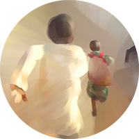
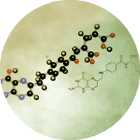

social impact projects

Terra Anima is passionate about social change and is committed to working on projects with postive social impact.
branding and motion projects
We specialise in broadcast design and network branding including. Our previous projects include the SBS Australia Network Refresh and Disney Channel production graphics packages.
visualisation and infographics

Information certainly is beautiful. Terra Anima can work with you to bring data and facts to life.